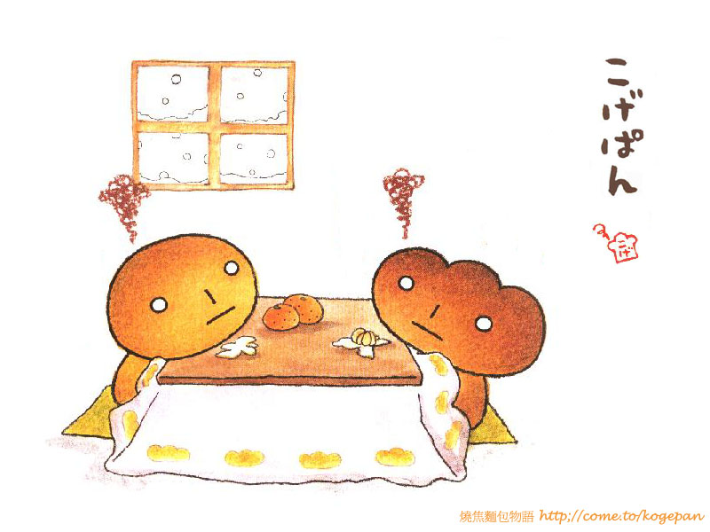
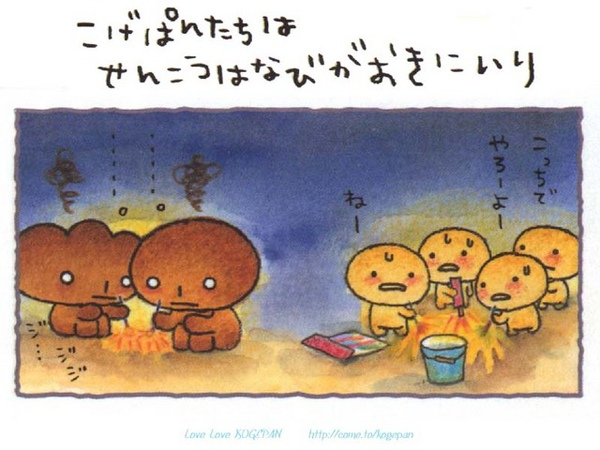
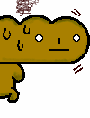

烤焦麵包是由一位名為Takahashi Miki 的日本人在1999 年6月5號所設計發行出來的卡通圖案名為【Kogepan】，這各圖案設計了不少的商品，但文具就佔了大多數，根據一些小道消息指出明年還會推出一些有關【Kogepan】的動畫呢！

烤焦麵包的由來是一塊用優質北海道豆沙製造而成的豆沙包,每日只限定售20個. 他原本是一個很名貴的麵包,上面就是他未被烘的樣子了.， 可惜好景不常,本來十分名貴的麵包被燒焦了,當然不能賣出, 麵包仔受到很大的打擊,覺得作為'麵包'的人生已經完結,頓時雙眼反白,木無表情,開始他可憐的人生. 他認為與其遭受大家的遺棄,就不如離家出走吧!離開麵包店後,麵包仔仍然遭到其他麵包對他投以奇異目光,另他覺得自己不受別人的喜愛,感受到世界的人情冷暖,明白到什麼是人生...自暴自棄的他學懂吸煙飲酒,終日無所是事,有時遇見漂亮麵包,他會向他們說教一番,發一發牢騷.那些單純的漂亮麵包很容易被他嚇怕呢!!不過,他也有發奮的時候,中間他會看看那本"怎樣成為漂亮麵包"的書. 他還有一句口頭禪就是:" 反正都是要被拋棄的 !
漂亮圖鑑 |
烤焦圖鑑 |
特色麵包 |
|||
漂亮麵包 |
奶油麵包 |
烤焦麵包 |
炭燒麵包 |
法國麵包 |
黑糖麵包 |
 |
|||||
|
這是每日限定發售二十個的特製麵包.看來十分美味呢，可是他是全部我覺得比較不可愛的一個。 |
這是漂亮的奶油麵包。 |
這就是他被燒焦後的模樣，他那寂寞的表情很惹人憐愛就連我也深深著了迷呢！ |
他的遭遇比主角更可憐，因為他被燒的更焦；還真有點同情他呢！可憐可憐！ |
他的樣子和奶油麵包有點相似呢. 看他的頭這麼大,走路起來一定是晃頭晃腦吧！嗯….可能找不到他適合他戴的帽子呦 |
好可愛,其他烤焦麵包的樣子都是很可憐,但這個麵包的樣子好像很開心似的,而且還發光呀.好像是烤焦麵包世界裡的小Baby。 |
Coding by CHAN, TooDou, CHUN-HSIANG 2015/08/14